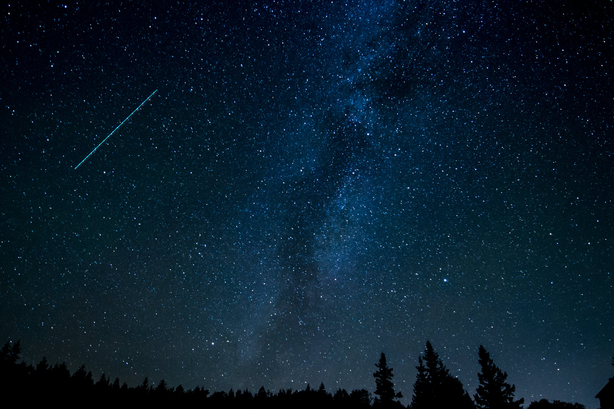

Embark on a celestial journey with our exploration of stars the radiant jewels adorning the cosmic canvas. From their birth amidst interstellar clouds to the dazzling display in our night sky, stars captivate us with their luminous tales. Discover the diverse tapestry of these celestial spheres, each telling a unique story through size, temperature, and color. Join us in unraveling the cosmic mysteries and exploring the wonders of the universe, as we bring the brilliance of stars closer to home. Let the cosmic symphony of lights guide you through our cosmic odyssey.
The popular star patterns offer both amateur and seasoned astronomers a chance to easily navigate the night sky and connect with the rich history of celestial observation.
| Orion's Belt | The Big Dipper | The Little Dipper | Cassiopeia |
|---|---|---|---|
| One of the most recognizable star patterns, Orion's Belt consists of three bright stars in a straight line. Located in the constellation Orion, this asterism is a prominent feature in the winter night sky. | Found within the constellation Ursa Major, the Big Dipper is a distinctive seven-star pattern resembling a ladle or dipper. Its prominence and easy identification make it a popular guide for stargazers. | Within the constellation Ursa Minor, the Little Dipper is another well-known asterism. Polaris, the North Star, marks the end of its handle and serves as a navigational reference. | Cassiopeia is a recognizable "W" or "M" shape formed by five bright stars. This constellation is visible in the northern hemisphere and is often referred to as the "Celestial W." |
|
| Pleiades (Seven Sisters) | Scorpius | Leo's Sickle | Cygnus the Swan |
|---|---|---|---|
| Also known as the Seven Sisters, the Pleiades is an open star cluster located in the constellation Taurus. Visible to the naked eye, these bright stars form a small but distinct group. | Representing a scorpion, Scorpius is a zodiacal constellation with a distinctive hook-shaped tail. Antares, a red supergiant, is a prominent star in this constellation. | In the constellation Leo, the sickle is a backward question mark or a hook-shaped pattern formed by the brightest stars. Leo is a zodiacal constellation associated with the Nemean Lion from Greek mythology. | Cygnus is a cross-shaped constellation known as the Northern Cross. Deneb, an exceptionally bright star, marks the tail of the celestial swan. |